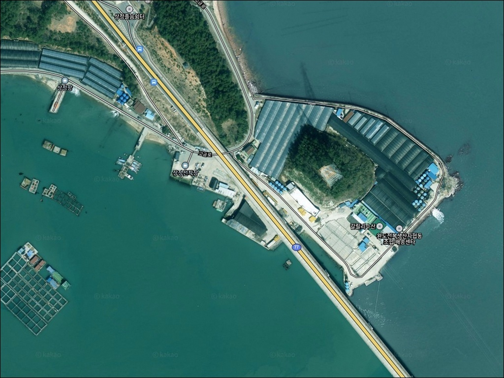
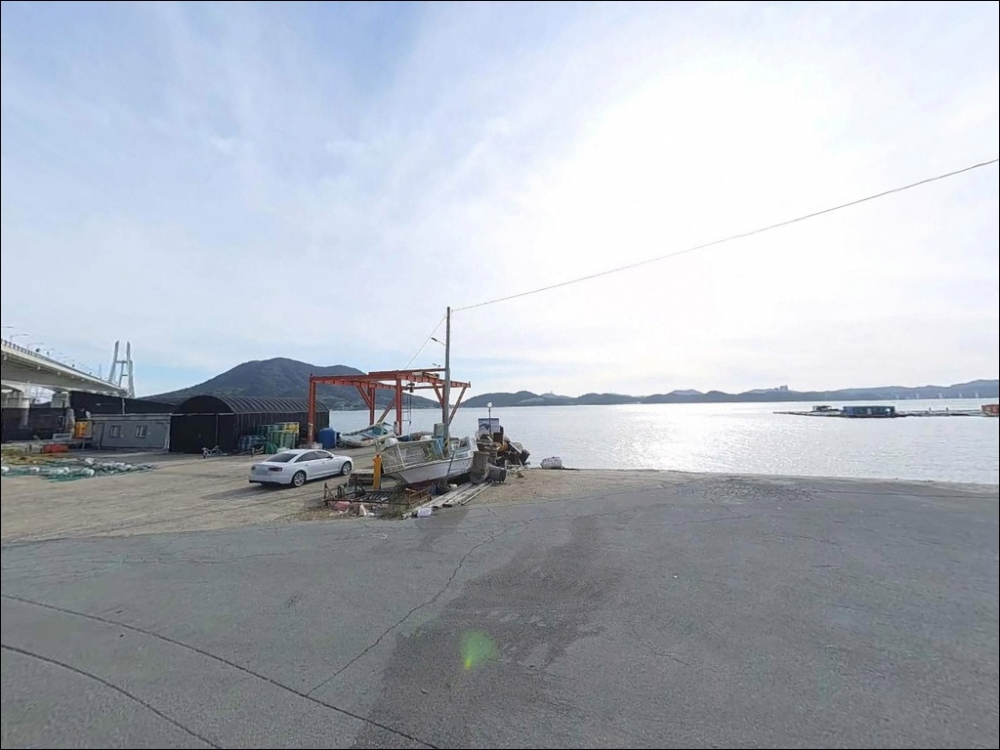
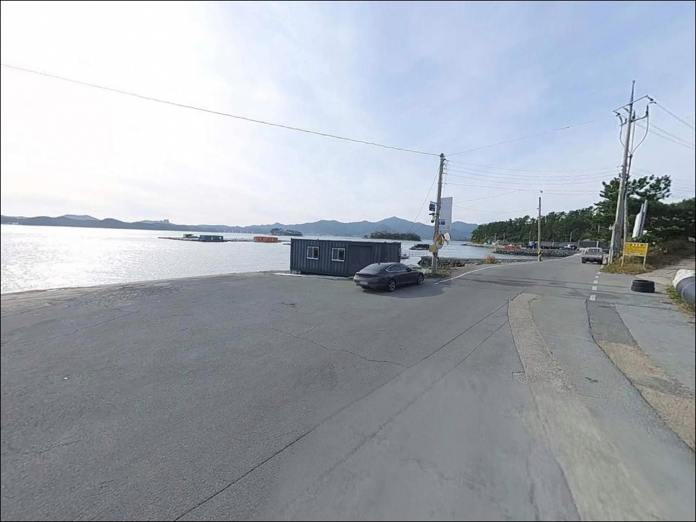
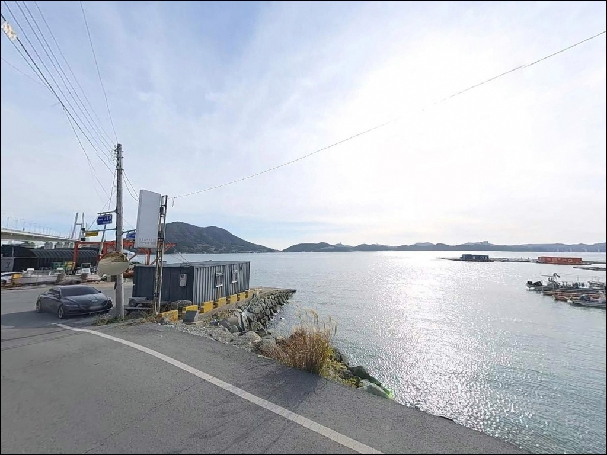
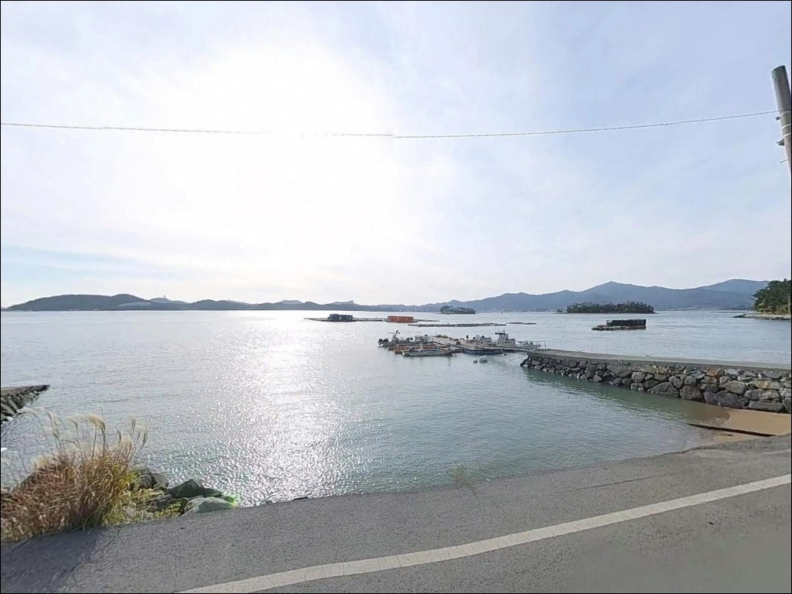
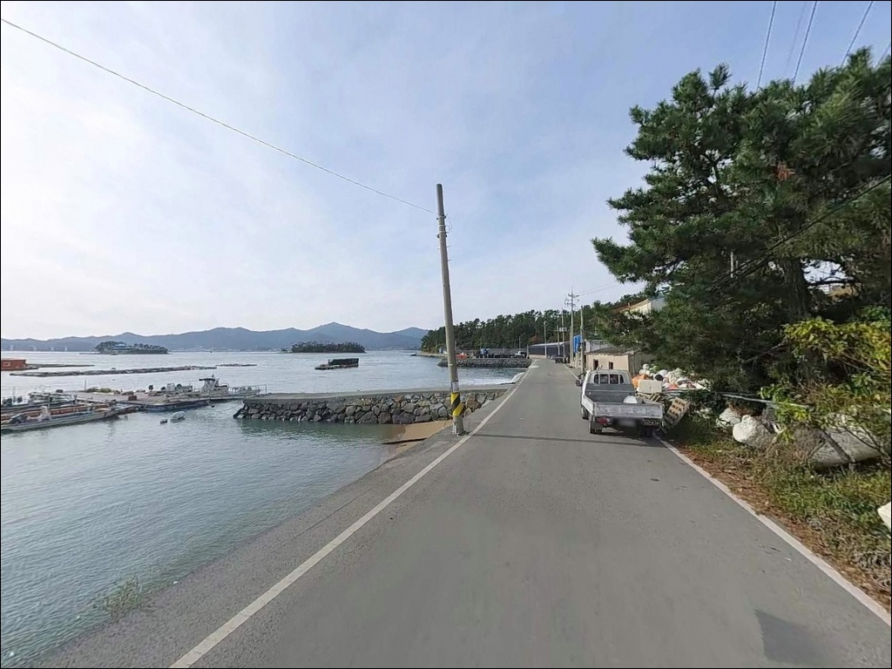
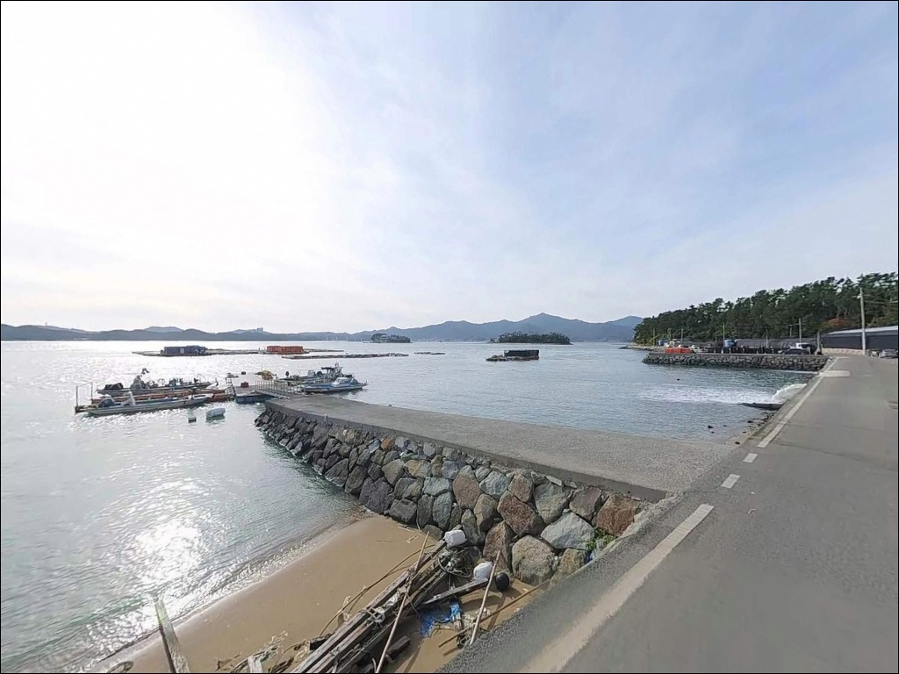
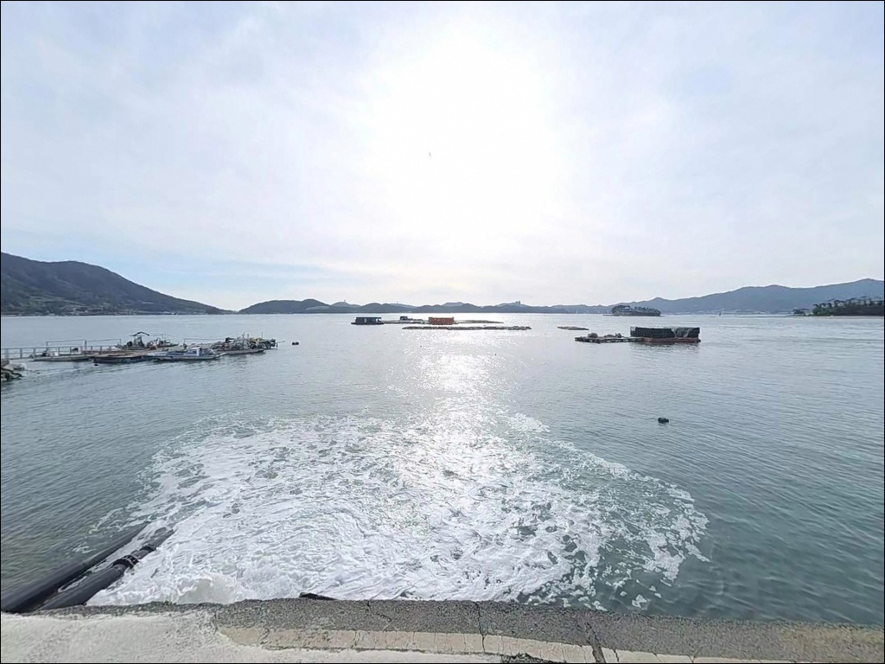
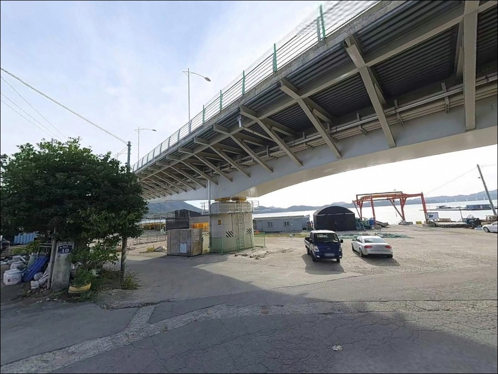

상정선착장, 고금도 전남 완도군 바다 낚시꾼들이 인정하는 차박 명당 스팟
이 페이지에는 광고(제휴 링크 포함)가 있으며, 광고 링크를 통해 구매하면 운영자가 판매 수익 또는 수수료를 받을 수 있습니다. 포인트 사진: 카카오맵 스카이뷰·로드뷰. 이 페이지의 지도·사진 이미지는 카카오맵의 실제 서비스 이미지와 다를 수 있습니다.


포인트 안내
상정선착장
전남 완도군 고금면 상정리 747-3
내만 포인트라서 조류가 약하다고 판단하고
아무 물때나 진입하면
채비가 뻘 바닥에 닿는 시간만 길어집니다.
상정선착장은 만 내부 순환 흐름이 중심인 구조라
들물과 날물의 전환 타이밍이
이 포인트 조과의 핵심 변수입니다.
고금도 서측 내만 안쪽에 자리한 이 선착장은
외해 직접 노출이 없는 반폐쇄형 구조로,
수면이 안정적이고 발판도 고른 편입니다.
신지도 방향 차도선이 운항되는
소형 페리 선착장이기도 합니다.
이 글은 상정선착장의 지형 조건,
진입 동선, 차박 여건,
낚시 스타일별 공략 기준에 집중합니다.
조황 단정이나 특정 어종 보장은
이 글의 범위에 포함되지 않습니다.

1. 진입 동선과 포인트 접근성
고금도는 고금대교(강진 마량면 방향)를 통해
육지와 연결되어 있어 차량 진입 자체는 어렵지 않습니다.
상정리까지 이어지는 고금도 내부 도로는
포장 상태이며 급경사 구간이 없습니다.
마을 내부 소로 구간에서
도로 폭이 좁아지는 지점이 있어
대형 SUV나 캠핑카는 초행이라면
위성지도로 진입로를 미리 확인하는 편이 좋습니다.
선착장 인근에 회차 공간이 있어
일반 승용차 기준으로는 진입과 회차 모두
큰 불편 없이 가능한 구조입니다.
주차는 선착장 앞 공터와
도로변 여유 공간을 활용하는 방식이며,
2~4대 수준의 소규모 주차가 가능합니다.
선착장은 차도선 운항지이기도 해
페리 시간대에는 일시적으로 통행이 늘어납니다.
도착 후 어선 및 차도선 이동 동선을
먼저 파악하고 자리를 정하는 것이 기본 순서입니다.

2. 차박 환경 평가 및 야간 체류 여건
상정리는 민가 밀집도가 낮은 조용한 어촌 마을입니다.
야간에는 차량 통행이 거의 없고
외해 노출이 없는 내만 구조 덕분에
바람과 파도 소음 영향이 최소화되는 환경입니다.
야간 분위기는 조용하고 안정적인 편이라
낚시 후 하룻밤 머무는 데 어울리는 구조입니다.
선착장 내 가로등은 제한적으로 설치되어 있어
완전한 암흑 환경은 아니지만
개인 조명 장비는 반드시 챙겨야 합니다.
마을과 인접한 위치이므로
차박 시 소음 관리가 필요하며,
22시 이후 엔진 공회전과 음향은 자제하는 것이
기본 매너입니다.
주차 공간이 넓지 않은 소형 선착장이므로
차박을 메인으로 계획한다면
먼저 도착해 공간 여건을 확인하는 것이 우선입니다.
평일 방문 시 공간 여유가 더 큰 편입니다.


3. 주변 편의시설 및 인프라 현황
반경 3km 이내에는 별도로 확인된
편의점이나 식당이 없습니다.
고금면 소재지(농상리 방향, 차량 약 7분)에
마트와 식당이 위치하며,
고금주유소(완도군 고금면 고금동로 42)도
이 방향에 자리하고 있습니다.
24시간 편의점은
CU 완도고금점(고금면 농상리 20-3)을
이용할 수 있습니다.
응급 상황이나 의료시설은 완도읍 방향에 있어
거리가 상당합니다.
출발 전 식수·연료·낚시 소품 완비가 기본입니다.

4. 방문 전 준비사항 및 체크 포인트
상정선착장 방문 전 가장 먼저 확인할 것은
물때입니다.
내만형 포인트이지만 초들물~중날물 구간에
만 내부 조류가 살아나는 구조라,
이 타이밍을 맞추는 것이
원투·찌낚시 모두에서 기본 전략이 됩니다.
바다타임에서 고금면 기준 물때를 확인하고
출발 시각을 역산하는 것이 순서입니다.
뻘·모래 혼합 지형 특성상
바닥에 채비가 걸리는 경우가 있습니다.
여분 채비와 봉돌은 넉넉하게 준비하는 편이 낫습니다.
소형 선착장이라 어선 접안이 수시로 이루어지므로
어선 이동 동선을 먼저 파악하고
자리를 정하는 순서가 필요합니다.
야간 낚시를 계획한다면
헤드랜턴과 구명조끼는 필수입니다.
내만이라도 기상 변화 시 바람이
즉시 현장에 반영되는 구조이므로
기상 예보는 출발 당일 아침에
다시 한번 확인하는 것이 기본입니다.

5. 물때에 따라 조과가 달라지는 지형 구조
상정선착장이 자리한 고금도 서측 내만은
외해 직접 노출이 없는 반폐쇄형 구조입니다.
수심은 선착장 끝단 기준 5m 내외이며
저질은 뻘과 모래가 혼합된 지형입니다.
급심 구간은 제한적이고
외측으로 갈수록 완만하게 깊어지는 형태입니다.
조류는 수로형처럼 빠르게 흐르지 않고
만 내부 순환 흐름을 중심으로 형성됩니다.
이 흐름이 살아나는 초들물~중날물 구간이
체류성 어종이 활성화되는 타이밍과 맞닿습니다.
내만 수심 포인트에서 조과를 결정짓는 변수는
물때보다 현장 진입 타이밍입니다.
석축 및 완경사 호안 구조로 테트라포트가 없어
발판이 안정적인 편입니다.
선착장 끝단보다 좌우 측면으로 분산해
투척하는 방식이 이 지형에 어울립니다.
가기 전에 고금도 일대 최신 조황은
반드시 검색해 보시기 바랍니다.


6. 포인트에 적합한 낚시 스타일 제안
이 포인트에서 가장 잘 맞는 방식은 원투낚시입니다.
뻘·모래 혼합의 완만한 수심 구조가
원투 채비와 잘 어울리는 지형 조건입니다.
선착장 끝단보다 좌우 측면으로 30~60m 투척해
바닥층을 탐색하는 방식이 유효하며,
초들물 전후 타이밍에 집중하는 것이
이 포인트의 기본 운용법입니다.
찌낚시도 내만 정체 수역 특성에 맞는 방식입니다.
선착장 끝단과 구조물 주변을 중심으로
부유성 어종 유입 타이밍을 노립니다.
감성돔과 숭어를 기대해 볼 수 있는 지형이며,
반유동 채비로 수심층을 바꿔가며
탐색하는 방식이 이 구조에 맞습니다.
에깅도 조건부로 운용할 수 있습니다.
고금도 일대 해역은 완도 해역 갑오징어 포인트로
분류되는 구역에 포함됩니다.
에깅이란 갑오징어·무늬오징어를 대상으로
에기(인조 미끼)를 사용하는 루어낚시 방식입니다.
가을철 갑오징어 시즌에 수로 방향으로
에기를 캐스팅하고 바닥층을 천천히 탐색하는
운용이 이 지형에 적합합니다.
야간 가로등이 확보된 경우
집어 효과가 더 높아지는 구조입니다.

7. 대안 포인트 및 플랜 B 동선
상정선착장이 여의치 않을 때
가장 먼저 고려할 대안은
대곡방파제입니다.
동일한 고금도 서측 해역 조건을 공유하며
약 1.1km 거리로 이동 부담이 적습니다.
방파제 길이가 더 길어 낚시 자리 선택의
폭도 넓은 편입니다.
고금도 내에서 더 넓은 방파제 구조를 원한다면
연동방파제(고금면 농상리, 약 5km)도
대안으로 활용할 수 있습니다.
동일 내만 해역 조건에서
더 긴 방파제 발판을 확보할 수 있는 지점입니다.
루어낚시와 에깅 폭을 넓히고 싶다면
고금대교를 건너
마량항(강진군 마량면) 방향이 유효합니다.
외항 구조와 테트라포트가 갖춰진
지방어항으로, 에깅과 원투낚시 모두
일반적인 방파제 낚시 환경에서 운용 가능합니다.

내만 포인트는 발판이 아닌
물때가 자리를 결정합니다
원투낚시나 찌낚시 위주로 낚시를 즐기는 낚시인이라면
상정선착장의 뻘·모래 혼합 지형과
안정적인 발판 구조는 잘 맞는 조건입니다.
외해 포인트처럼 거친 파도나 강한 조류를
걱정하지 않아도 되는 내만 구조라는 점도
체력 소모를 줄여주는 장점입니다.
다만 물때 계산 없이 진입하면
채비가 뻘 바닥에 묻히는 시간만 길어집니다.
초들물~중날물 타이밍을 맞추고,
자급 준비와 진입로 사전 확인까지 갖춘다면
고금도에서 조용하게 하루를 보낼 수 있는
포인트가 됩니다.
외지 낚시인보다 덜 알려진 포인트인 만큼
먼저 답사해 두면 자신만의 루트로 삼을 수 있습니다.
낚시 후 선착장 옆에 조용히 자리를 잡고
고금도의 내만 밤바다를 만끽하는
차박 여행도 이 포인트가 허락하는 여유입니다.